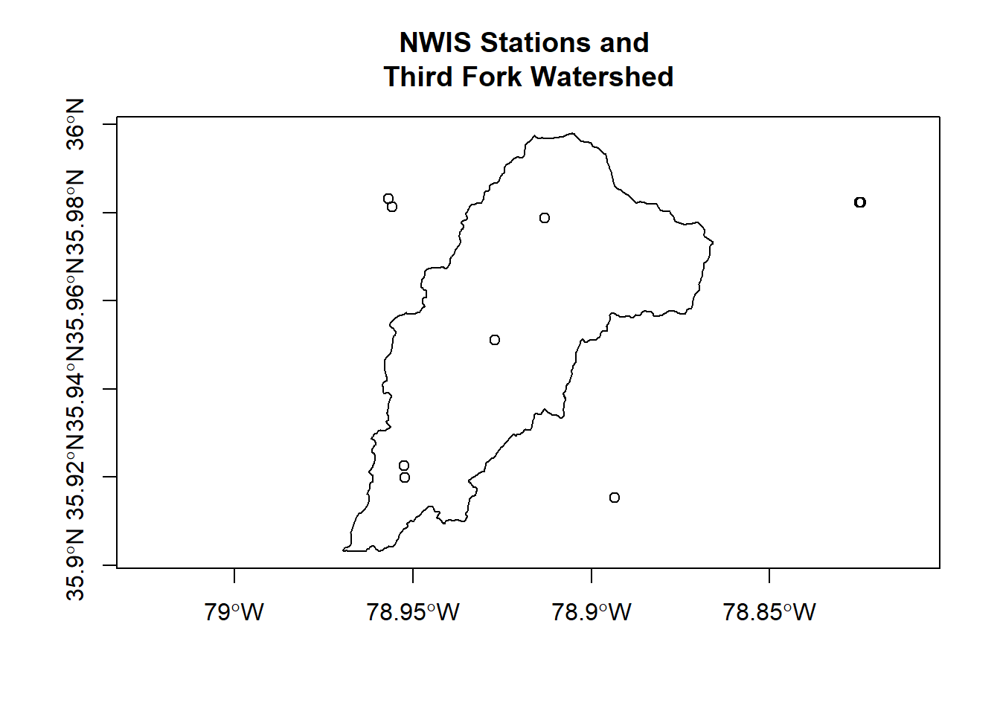

Spatial Operations 2
Lesson Goals
- Learn ways to extract and summarize raster data by point and by polygon
- Explore working with water data using
dataRetrieval
Data Retrieval package
Let’s explore the DataRetrieval package a bit and download some sample data. This is a phenomenal package for retrieving and working with USGS and EPA hydrology and water quality data. There is a lot to this package - I’m still learning, and we’ll just scratch the surface. For more info look at the USGS site and online tutorial.
library(dataRetrieval)
library(sf)
Durham_Stations <- readNWISdata(stateCd="North Carolina", countyCd="Durham")
# DataRetrival returns objects as 'attributes' - things like the url used, site metadata, site info, etc - just use attributes(Durham_Stations) to examine
siteInfo <- attr(Durham_Stations , "siteInfo")
stations_sf = st_as_sf(siteInfo, coords = c("dec_lon_va", "dec_lat_va"), crs = 4269,agr = "constant")
ThirdFork <- st_read('data/Third_Fork.shp')## Reading layer `Third_Fork' from data source `/home/marc/GitProjects/R-User-Group-Spatial-Workshop-2018/data/Third_Fork.shp' using driver `ESRI Shapefile'
## Simple feature collection with 1 feature and 21 fields
## geometry type: POLYGON
## dimension: XY
## bbox: xmin: -78.96945 ymin: 35.90316 xmax: -78.86583 ymax: 35.99798
## epsg (SRID): 4269
## proj4string: +proj=longlat +datum=NAD83 +no_defsplot(ThirdFork$geometry, axes=T)
plot(stations_sf$geometry, add=T)
title(main='NWIS Stations and \nThird Fork Watershed')
We could clip our sites to our watershed, and create plots of hourly discharge for the three sites in our watershed - first we use spatial indexing to clip our stations:
ThirdForkSites <- stations_sf[ThirdFork,]Quick Exercise Fix the error we get in code above then continue on with next code chunk to clip and plot discharge
Ideas for leveraging DataRetrieval to plot hourly discharge from Ryan Peek.
library(ggplot2)
stations_sf <- st_transform(stations_sf, st_crs(ThirdFork))
library(lubridate)
ThirdForkSites <- stations_sf[ThirdFork,]
pCode <- "00060" # 00060 is flow
start.date <- "2015-10-01"
end.date <- "2018-03-30"
# get NWIS data - I'm passing all three station numbers to readNWISuv
ThirdForkFlow <- readNWISuv(siteNumbers = ThirdForkSites$site_no,
parameterCd = pCode,
startDate = start.date,
endDate = end.date)
# add the water year - this function in DataRetrieval knows the data range we have comprises one water year...
ThirdForkFlow <- addWaterYear(ThirdForkFlow)
# We can rename the columns to something easier to understand (i.e., not X00060_00000)
ThirdForkFlow <- renameNWISColumns(ThirdForkFlow)
# here we'll calculate and add approximate day of the WATER YEAR (doesn't take leap year into account)
ThirdForkFlow$DOWY <- yday(ThirdForkFlow$dateTime) + ifelse(month(ThirdForkFlow$dateTime) > 9, -273, 92)
# plot flow
(plot1 <- ggplot() + geom_line(data=ThirdForkFlow, aes(x=DOWY, y=Flow_Inst), color="dodgerblue") +
facet_grid(waterYear~., scales = "free_y") +
labs(y="Hourly Flow (cfs)", x= "Day of Water Year", title="Hourly Discharge USGS Stations in Third Fork Watershed"))
Notice I had all three stations in the function to retrive data, but only 1 was returned - apparently other two didn’t have data in that date range.
Summarize NHD in watershed
Zonal Stats
Summarize Categorical Raster
library(FedData)
library(raster)
NLCD <- get_nlcd(template = as(ThirdFork,'Spatial'),
year = 2011,
dataset = "landcover",
label = "ThirdFork")
proj4string(NLCD)
# we'll project to albers
ThirdFork_alb <- st_transform(ThirdFork, crs=projection(NLCD))
NLCD <- mask(NLCD, as(ThirdFork_alb,'Spatial'))
plot(ThirdFork_alb$geometry, main="Elevation (m) in Third Fork Watershed", axes=T)
plot(NLCD, add=TRUE)NAvalue(NLCD) <-0
plot(ThirdFork_alb$geometry, main="Elevation (m) in Third Fork Watershed", axes=T)
plot(NLCD, add=TRUE)